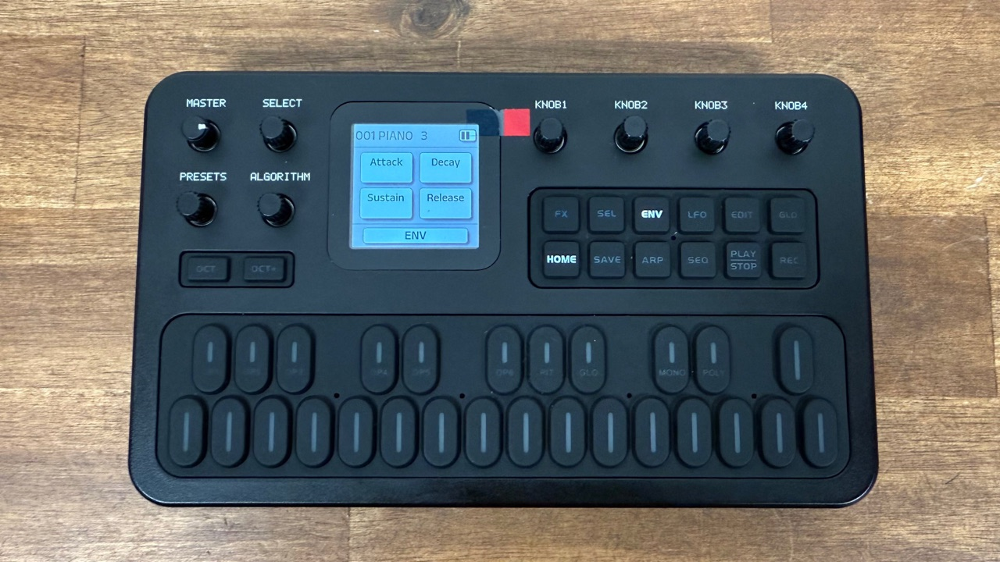

6. LFO and the ENV button
Vibrato, tremolo and the global ADSR
LFO: vibrato and tremolo
The LFO (low frequency oscillator) is a slow wave that wobbles the voice. It can wobble the pitch (vibrato) and/or the volume (tremolo). Its settings are part of each voice.
Press LFO. Page 1 appears (
1/2).Set the four values:
- K1 Wave: Triangle, Saw Down, Saw Up, Square, Sine or Sample & Hold.
- K2 Speed 0–99. Higher = faster.
- K3 PMD (pitch modulation depth) 0–99. How much the LFO wobbles pitch.
- K4 AMD (amplitude modulation depth) 0–99. How much it wobbles volume.
Press LFO again to go home.
The six waves
LFO page 2
Turn SELECT clockwise.
- K1 Delay 0–99. How long after you press a key before the LFO fades in. A little delay gives the natural “start straight, then add vibrato” of a singer.
- K2 Pitch Sens 0–7. How strongly pitch follows the LFO’s PMD. At 0 there is no vibrato even with PMD turned up.
- K3 Key Sync (the manual calls it “Lfo Sync”) Free or Sync. Sync restarts the LFO at every new note so each note wobbles the same; Free lets it run continuously.
- K4 Osc Sync On/Off. Whether operator oscillators restart for each note. This is the same setting as on EDIT → GLO page 1.
How the LFO reaches the sound
- Vibrato: set PMD above 0 and Pitch Sens above 0. Wave sine or triangle, Speed about 30–50.
- Tremolo: set AMD above 0 and raise AmpMod on the operators you want to wobble (EDIT → OPn → page 4). Operators with AmpMod 0 ignore the LFO’s amplitude wobble.
- The mod wheel of an external keyboard (MIDI CC1) controls LFO pitch depth, scaled by Pitch Sens. See MIDI.
The screen shows Speed as 0–99 with no unit. Per research notes the speeds follow the DX7 (Dexed) table, but the FM-1 does not print Hz.
ENV: the global ADSR

On top of the six DX7-style operator envelopes, the FM-1 has one extra, simpler envelope that shapes the volume of the finished sound. It is off by default. It is a quick way to soften attacks or lengthen releases without touching the operators.
Press ENV. Its LED lights and the ADSR is switched on.
Set the four bars:
- K1 Attack 0–100%. How long the sound takes to reach full volume. 0 = instant, 100 = very slow fade-in.
- K2 Decay 0–100%. How quickly it falls from the peak to the sustain level.
- K3 Sustain 0–100%. The level held while the key is down. Higher = louder.
- K4 Release 0–100%. The fade-out after you let go. 0 = cut off, 100 = long.
Press ENV again to switch it off (LED goes out). Your values are kept.
The ADSR on/off and values are stored with each voice (hold SAVE). In V09 the range was 0–8, later 0–10, and from V15 it is 0–100%. If you are following an older tutorial that mentions 0–10, multiply by ten.
The ADSR multiplies the whole voice. The operator envelopes (EDIT → OPn → pages 2–3) shape each operator separately, including the brightness of modulators. Use ENV for broad strokes; use operator envelopes for character.